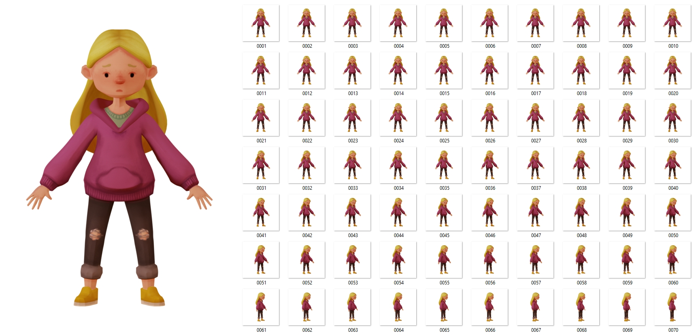
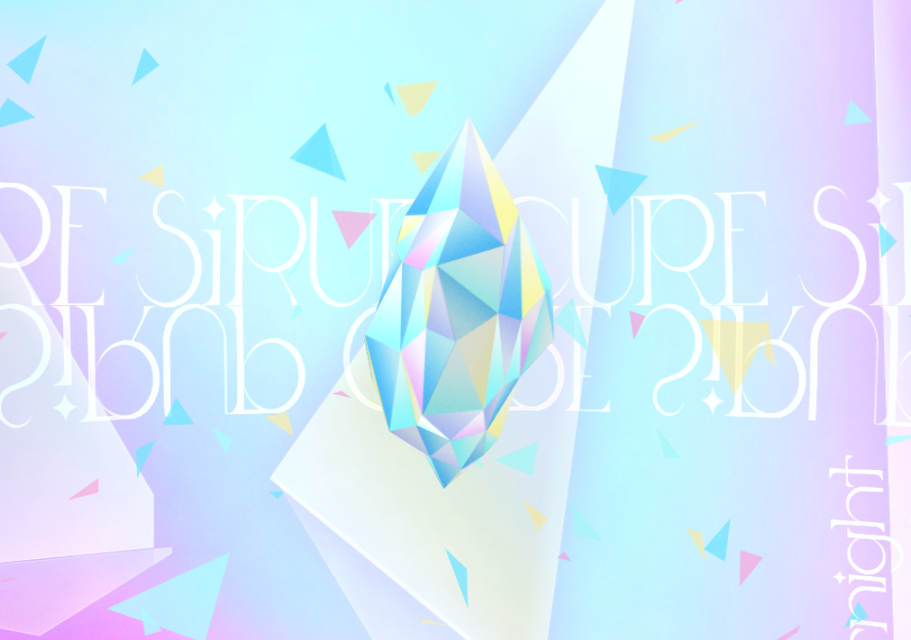
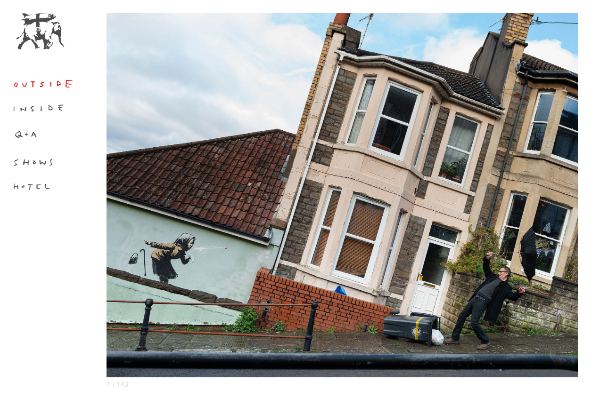
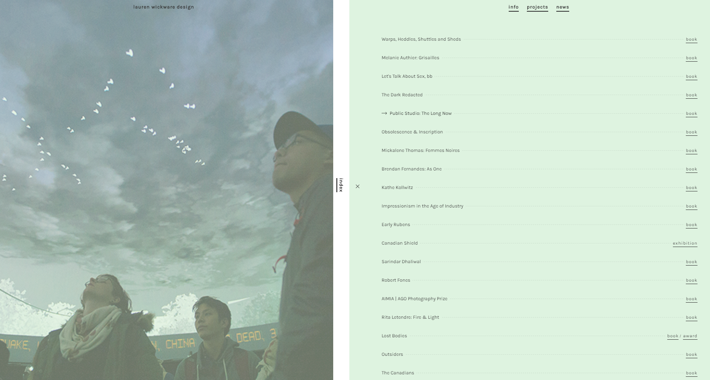

The article Game Design UX Best Practices by Amir Dori has some useful insights:
Firstly, make sure that any "pop-ups" or overlays don't have an "x" to exit out of them, because users may automatically click the "x"
without reading the pop-up content. Secondly, keep in mind: most users are right handed, so we should design mobile games understanding
that the users thumb can most easily reach certain parts of the screen, while other parts are more difficult to reach.
I hadn't considered this latter concept and it gave me the idea that maybe any games I design for mobile could have a "left-handed" mode that is easier for left-handed users to
operate. However, most of the article focuses on manipulating the user to spend money. This genuinely infuriated me.
The average mobile game user spends little to no money on mobile games but freemium
games target "whales": the handful of users that make up for 90% of a freemium games profit. People with addictive or impulsive personality
disorders are highly vulnerable to being taken advantage of and becoming whales. To me, freemium game design that purposefully manipulates
whales into spending more money is akin to selling drugs to a drug addict. Then again, drug dealers don't usually sell to children. (See: 6-year-old racks up $16K on mom’s credit card playing video games)
Freemium game design especially angers me because the goal isn't to make a good game. The goal is to tease the user
with the possibility of a good game, and then pelt them with as many ads as possible. Many of these games purposefully design the
levels to be impossible to complete if you don't pay money to buy power ups or watch ads to "earn" those power ups. Just one example of how these games implement a "pay to win" model is giving the user a time limit
to complete a level and setting it to such a small amount of time that it's literally impossible to beat the level if you don't have a timer boost power up. And this is even done to users that have already paid for the poorly named "no ads" feature! If you look at the
reviews under these types of games you'll notice that they invariably have tons of one star reviews complaining about the number of ads
or complaining that you can't win the levels without paying for powerups.
In conclusion, my goal when I set out to make a game is to make a good game that people will pay for because they
genuinely enjoy playing! Not because the game is impossible to enjoy if you don't pay to win. The author may have made hundreds of games in his career, but I would much rather make a small handful
of games that I can be proud of than hundreds of games that empty people's wallets instead of giving them joy.
Every Picture: Visual Thinking Analysis Learning Journal
Part One:

An image of my 3D character Model, Leah. For the game Haunt This House
What and how is this image interesting?
What I think is interesting about the image is it shows how simple a character concept can be. Additionally, the image has multiple frames of animation that shows a full turn around of the 3D character.
How does this image relate to the topic of your archive or collection?
While the game has no main character, per se, Leah is the character that I have the strongest emotional connection to. Since the game is semi-autobiographical every character represents a different part of my life. Leah represents who I was when I was going through undiagnosed depression as a teenager. Her long blonde hair and name are inspired from my best friend in highschool who I bonded with because we were going through similar emotional struggles at the time. Her baggy hoodie represents the desire to hide away from the world, to keep oneself comforted by isolating and separating oneself.
How does your collection or archive say (i.e. tell a story) about you?
As mentioned in the previous question/answer, the game Haunt This House is semi-autobiographical. All of the characters represent different stages of my emotional development. Since the other charcters haven't been designed yet, this archive currently focuses just on Leah. But the archive also tells a story about my creative process for creating the game Haunt this House.
Part Two:
Peter Lo's image of an alley market on a cloudy day.
What is this image about?
The image's focal point are two people who appear to have forgotten to bring their umbrella to the market that day and it has apparently begun to sprinkle because they are surrounded by a crowd of people who have already pulled out umbrellas to protect themselves from the drizzle. The image is about these two people and their feelings in that moment. What may have been a lovely outting appears to have turned a bit inconvenient.
What are the most interesting aspects of this image?
The colors communicate the feeling of dreariness of a cloudy day, contrasted again the brightly colored trees, umbrellas and market decorations in the background. It separates the two "main characters" out from the crowd contrasting their experience against the experience of the crowd. I also like how the perspective lines of the photograph, due to the alley way, push outward toward the viewer further pushing focus towards our two "main characters."
What are the most obvious and the most mysterious aspects of this image?
What is obvious to me is that the crowd has gathered for some kind of public family-friendly event, due to the differerent people in the crowd that I see are with their children. Furthermore, it's obvious that it's a cloudy, rainy day because of the color grading of the image and the presence of so many umbrellas among the crowd. What is mysterious is that it is unclear what exactly the event in question is. I assumed some kind of outdoor market, but is the a usual affair like a farmer's market? Or perhaps a special holiday? Since all we can see are the crowds, not what they are gathered for exactly, we can't be sure why they are gathered in this location, only that it is a popular gathering that people are willing to attend despite the chance of bad weather.
Every Picture: Visual Literacy
Goldilock's and the Three Websites
While searching for websites that use images in creative ways I quickly noticed that many websites tend to fall in one of two categories: Very creative and beautiful but almost unusable because it is not clear how to use the site, or websites that are bland in design but easy to navigate.
Mama Bear

For example, I would have liked to write about this playlist website which has a beautiful color scheme and a shimmering crystal at the center of it's three dimensional design. But it took much too long for me to figure out the interface. The user drags their mouse to rotate the 3D view, but hovering the mouse over a triangle causes a song to preview. Since the view rotation is controlled by the mouse it's not clear that it's the hovering, not the rotating, that triggers the music. This also causes the music turn on and off in a jarring way as you move your mouse over the triangles to rotate the view. If the user can't figure out the hover action then there is no hope for them to figure out that clicking a triangle will bring up more information about the song and allow the song to play through to the end.
Papa Bear

After this disappointing experience I remembered that I've always liked Banksy's website but it's been a long time since I have seen it so I decided to go check it out. The content does not disappoint, the homepage has a humorous Bob Ross parody that was worth the price of admission. (Seeing as the price of admission is just a click.) But it was immediately apparent to me that I couldn't write much about this website because it's design is purposefully bland. This is perfect for a portfolio website since it let's the art speak for itself, but it wasn't what I was looking for.
Baby Bear

I didn't find my Goldilock's website until I stumbled upon the design portfolio of Lauren Wickware. Although I am not a huge fan of how sticky the scroll action is, I quickly got used to the fact that I had to scroll quickly to snap to the next image. The most impressive aspect of Lauren Wickware's website is the use of color to create a cohesive portfolio. As the user scrolls down the homepage, the page snaps to view after view of different book covers, magazine spreads, and posters that Wickware has designed. Each photograph is displayed with a pastel colored tinted overlay that matches the other half the screen. This means that as the user scrolls down the page every image fits into this cohesive color scheme. But, if the user wishes to view the true-to-color version of the photographs they need only hover their mouse over the image. Elegantly simple. Within seconds of looking at the homepage I discovered a sidebar menu that gives the user access to an index that lists all of Wickware's design projects and the linked list snaps the page to whichever project is selected. What impressed me the most about this design is that I only read 6 words of text at the top of the page and was on the website for less than 15 seconds before I understood that Lauren is a prolifi designer responsible for the design of 52 different graphic design projects and all of this information was communicated to me without even opening an About Me section. Amazing.
In Conclusion
Visual story telling is a difficult task, as any illustrator or print designer can attest to, but designing a website provides the unique challenge of the additional requirement that the user interaction is intuitive and responsive. The admirable balance of user-friendly but beautiful design exemplified by Lauren Wickware's website is what I will be striving for as I plan the next class project.
Best Practices for Modals / Overlays / Dialog Windows
Reading; Impressions and Observations
The article assigned for this week ends with a checklist of questions that a designer should ask themselves when deciding whether to use window overlays, also known as modals. For this journal entry I will examine each question and answer it to the best of my ability.
When do we show the modal?
Modals should not be used for warnings or error messages because users may assume the page is full of virus-laden popups. Error messages should be embedded in the parent page instead. So when should we show a modal?
Because the appearance of a modal can trigger the same reaction from the user as a pop-up, i.e. "Ugh, go away. I am trying to use this website right now," then the designer should ensure that a modal doesn't appear unexpectedly.
The best way to do this is to have the modal be triggered by user interaction with the page, for example, clicking a "Log In" button triggering a prompt to enter your username and password is an appropriate time to show a modal.
How do we show the modal?
When a modal appears the parent page should darken, an effect called "light box", to draw attention to the modal and indicate to the user that they cannot interact with the parent page while the modal is open.
Furthermore, the modal should appear near the top of the page, since different screen sizes may cause a lower-placed modal to appear off-screen. This could cause confusion in the user, seeing the parent page darken but not seeing a modal to interact with.
As a general rule, modals should not be used for mobile device website designs because of potential screen size layout problems.
What should the modal look like?
Modals should include an exit button that can be clicked on or triggered with the keyboard for accessibility. Think of it this way: Would you rather the user close the modal, or leave your website all together?
They should also include a descriptive title so the user knows the purpose of the modal. Buttons to interact with the modal should have clear names. For example, a "Cancel Membership" overlay with a "Cancel" button at the bottom is unintuitive.
Am I confirming that I wish to cancel? Or am I cancelling the cancel? A better label for the button would be, "Yes, cancel my membership."
What information do we present and collect?
This is going to depend on the context. Sometimes you can use a modal to show media without losing the context of the parent page, for example, showing a larger image of a product for a user that is browsing your online store.
Alternatively you can use a modal to display information that is not directly related to the context of a page. For example, a notification.
In Conclusion
Modals are very common design elements in modern website design but they should not be used frivolously or in the wrong context. It's important to know when a modal is appropriate
and what the exact purpose of the modal is that it can be designed in a user-friendly way. Poorly designed modals don't just frustrate users: they drive them away from your website!